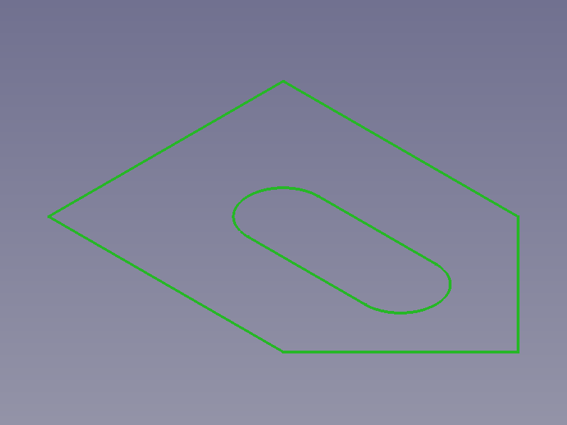
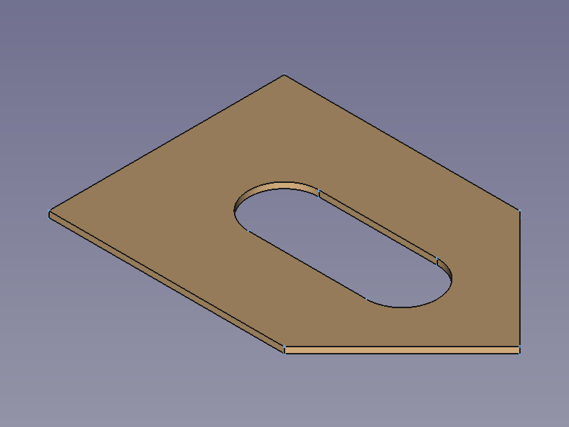
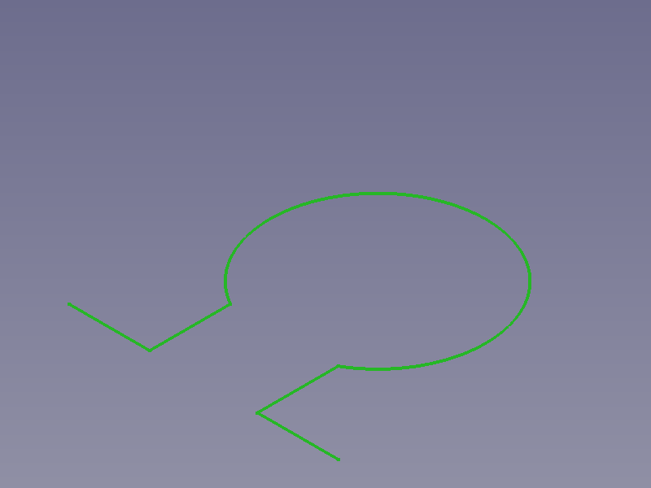
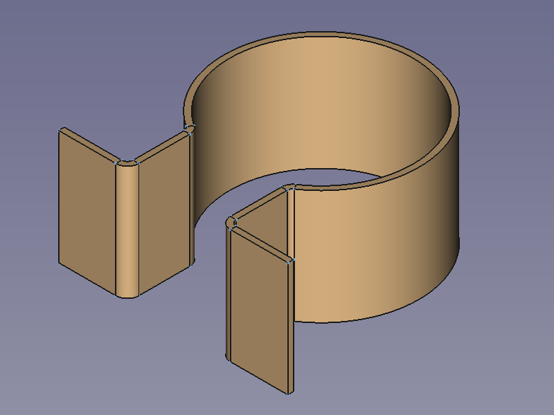

Profile Based Shapes/fr
This documentation is not finished. Please help and contribute documentation.
GuiCommand model explains how commands should be documented. Browse Category:UnfinishedDocu to see more incomplete pages like this one. See Category:Command Reference for all commands.
See WikiPages to learn about editing the wiki pages, and go to Help FreeCAD to learn about other ways in which you can contribute.
Préface
Cette page doit faire la distinction entre les objets FreeCAD et les objets du monde réel créés par une opération appelée extrusion.
- Dans FreeCAD, comme dans la plupart des autres logiciels de CAO, l'extrusion consiste à répartir un profil le long d'une ligne droite. Ni plus, ni moins.
- Dans le monde réel, l'extrusion est le nom du processus consistant à presser un matériau à travers une matrice pour créer des objets présentant une section transversale constante sur toute leur longueur. Ces objets sont rarement modélisés sous forme de matière première à l'état brut ; au contraire, c'est l'objet fini qui est modélisé à l'état assemblé. Cela nécessite de répartir un profil le long d'une arête qui est tout sauf droite. Pensez au joint de fenêtre ou de porte d'une voiture qui suit une courbe en 3D.
Sur cette page, un objet extrusion/extrudé sera utilisé pour désigner des objets de document ou fes objets de l'arborescence de FreeCAD, tels que des objets de Part Extrusion et les objets de PartDesign Protrusion, tandis qu'un élément extrusion/extrudé désigne des éléments du monde réel qui, lorsqu'ils sont modélisés à l'état assemblé, sont généralement des objets de balayage.
Introduction
La conception basée sur des profils repose sur le principe consistant à tracer le mouvement d'un profil dans l'espace 3D afin de créer des formes 3D, soit le long d'une courbe 3D, soit à l'aide de plusieurs courbes 2D de référence. Cette page vise à nommer et à décrire correctement plusieurs types de formes selon la terminologie de la géométrie descriptive, ainsi que les outils FreeCAD permettant de créer une géométrie donnée. Gardez à l'esprit que la terminologie de la géométrie descriptive et les noms des outils FreeCAD ne correspondent pas toujours (voir la préface ci-dessus concernant l'extrusion).
N'hésitez pas à corriger les termes mal choisis si vous en trouvez.
Plusieurs outils font la distinction entre profil et section pour un contour 2D ouvert ou fermé (ligne, arc, cercle ou polyligne), lorsque plusieurs contours sont utilisés. Le premier est toujours appelé profil, tandis que les autres, facultatifs ou obligatoires, sont appelés sections. Les pages du Wiki utilisent souvent le terme coupe transversale pour désigner ces dernières afin d'éviter toute confusion avec le terme section qui désigne une vue en coupe, et c'est également le cas de cette page.
Conception basée sur des profils
Generally there are two principle ways to create 3D shapes from 2D contours: Tracing a profile along a spine and distributing a face between two or more supporting 2D contours (3D curves may be accepted by some tools but using 2D curves are tried and trusted since the days of manual drafting).
- Tracing an invariable contour from the first profile along a spine to the last cross-section is the original way of designing sweep shapes. Modern CAD applications including FreeCAD also allow to vary its contour by using different cross-sections along the spine with their sweep tools, resulting shapes are rather transition shapes than sweep shapes.
- Distributing a face from profile to cross-section via one or more optional supporting cross-sections (usually open contours) but without a spine is the original way to create loft shapes. Modern CAD applications including FreeCAD also allow closed contours with their loft tools but don't remind users to use identical numbers of contour segments and to align start points correctly, that's why creating loft shapes from open contours is quite self explaining in contrast to creating loft shapes from closed contours.
Traced or distributed shapes are usually hollow pipe-like shells. If both their base profile and final cross-section enclose a face they result in a closed shell, sometimes called a volume. Volumes are considered hollow, if they are filled they are called solids. Closed volumes created with Part tools are automatically considered solid shapes.
Shapes built with PartDesign features are always solids, and since open profiles usually result in surface shapes they currently cannot be used to create PartDesign features.
Prismatic shapes
Prismatic shapes have invariable cross-sections traced along a straight line/vector, and we have to decide if we need a surface shape or a solid shape.
- Tracing along a straight line/vector is called extrusion (Part) or padding (PartDesign) in FreeCAD.
Prismatic surface shapes
Prismatic surface shapes can be created with  Part Extrude. The elements of the profile have an influence on the resulting shape:
Part Extrude. The elements of the profile have an influence on the resulting shape:
- A single straight line results in a planar face.
- A circle or an arc results in a closed or open cylindric face.
- A polyline results in a shell, a shape made of connected faces
{kind=link}
{kind=link}
Profiles (green), extrusion vector (yellow), and resulting shapes
Prismatic solid shapes
Prismatic solid shapes (also called prismoids) can be created with  Part Extrude, too if the option Create solid is checked, or with
Part Extrude, too if the option Create solid is checked, or with  PartDesign Pad.
PartDesign Pad.
{kind=link}
Closed profiles from above and resulting Part shapes with option Create solid enabled
See PartDesign Examples for more prismatic solids.
Another tool to to create prismatic solid shapes is provided by the external  SheetMetal workbench:
SheetMetal workbench:  Make Base Wall creates planar objects (blanks) from closed contours and unfoldable bend objects from open contours.
Make Base Wall creates planar objects (blanks) from closed contours and unfoldable bend objects from open contours.
   

Right: Closed profiles (nested included) result in blanks having a thickness / Left open profiles result in profile objects having a thickness and a length
Rotated shapes
Rotated shapes have invariable cross-sections traced around an axis (which is the same as along a circular line) and we have again to decide if we need a surface shape or a solid shape.
- Tracing around an axis is called revolving in FreeCAD.
Rotatated surface shapes
Rotated surface shapes can be created with  Part Revolve. The elements of the profile have an influence on the resulting shape:
Part Revolve. The elements of the profile have an influence on the resulting shape:
- A single straight results in a cylindric, a conical, or a planar face.
- A circle or an arc results in a closed or open section of a torus surface.
- A polyline results in a rotation shell, a shape made of connected faces of the above types.
{kind=link}
{kind=link}
Profiles (green), rotation axis (yellow), and resulting shapes
Rotatated solid shapes
Rotatated solid shapes (also called toroids) can be created with  Part Revolve, too if the option Create solid is checked, or with
Part Revolve, too if the option Create solid is checked, or with  PartDesign Revolution.
PartDesign Revolution.
{kind=link}
Closed profiles from above and resulting Part shapes with option Create solid enabled → solid
See PartDesign Examples for rotated solids. (They show profiles distributed along a circular spine, but the resulting shapes are the same as if the profiles were rotated)
Sweep shapes
Sweep shapes have invariable cross-sections distributed and traced along a spine (the spine is a 2D or 3D backbone curve that controlls the location and normal direction of cross-sections). We have in this case as well to decide if we need a surface shape or a solid shape.
Sweep surface shapes
Sweep surface shapes can be created with  Part Sweep.
Part Sweep.
{kind=link}
{kind=link}
Profiles (green), spine (yellow), and resulting shapes)
Sweep solid shapes
Sweep solid shapes can be created with  Part Sweep, too if the option Create solid is checked, or with
Part Sweep, too if the option Create solid is checked, or with  PartDesign AdditivePipe.
PartDesign AdditivePipe.
{kind=link}
Closed profiles from above and resulting Part shapes with option Create solid enabled
Modeling items with a constant cross-section
Real world items that are produced by a manufacturing process called extrusion, i.e. by pushing material through a die, are usually modeled in their assembled condition and in their manufacturing condition. This also applies to items produced by rolling.
- Assembled condition: In most cases a 3D bent shape is modeled by sweeping a profile along a 3D curve.
- Manufacturing condition: A prismoid shape is modeled by extruding or padding a profile (which in fact is sweeping a profile along a straight line).
In relation with CAD to extrude usually means to distribute a profile along a straight line or vector. Even open profiles with no thickness can be extruded, which is impossible in the real world.
{kind=link}
An L-shaped rolled and bent frame modelled with  Part Sweep, with a mounted sealing profile (a sweep object with a nested contour) made with
Part Sweep, with a mounted sealing profile (a sweep object with a nested contour) made with  PartDesign AdditivePipe, both based on the same spine
PartDesign AdditivePipe, both based on the same spine
Prismatic and rotated shapes can be created with the sweep tools as well if lines, and arcs or circles are used as spines. See PartDesign Examples.
Tracing profiles
What does a CAD application do in the background? As stated above, we supply the profile and some kind of spine and the sweep tools do the uncomfortable work:
- Distributing the profile:
- Creating working planes normal to the spine in each knot (start/end point) of spine segments.
- Copying profiles, i.e. redrawing the profile on a working plane.
- The actual tracing:
- Connecting the related points of profile and cross-section(s) with curves that run parallel to the spine (equidistant curves).
- Filling the faces between a profile segment, a cross-section segment, and two connection lines/curves.
- Filling faces inside the profile and the last cross-section to close volumes and create solids.
To visualize the steps we use a profile similar to the "Hamburger Zipfel" that has taught generations of automotive students how to distribute and trace sealing profiles manually.
{kind=link}
Profile (green), spine (yellow), normal planes on start/end points of segments (light blue), cross-sections (light green), connecting curves (grey), and faces (blue) in order of appearance
FreeCAD's sweep tools allow to use profiles that do not lie on planes that are normal to the spine, but they are still controlled by the virtual working planes.This should be avoided as this leads to kinks in the object surfaces:
{kind=link}
Profile tilted out of the normal plane (purple) and the resulting shape in comparison with the previous example (grey profile and dashed lines); the kinks are clearly visible
Notes on spines
- Spines alone are not able to control the X direction of the (virtual) working planes and as a consequence the alignment of the cross-sections. Some more conditions apply:
- The origin of a (virtual) working plane is on the spine and its normal/Z axis is collinear to the tangent of the spine in this point.
- Straight segments keep the direction of X axes parallel (and all normals/Z axes are collinear).
- Circular segments keep a constant angle between X axes and the lines connecting origin and arc center.
- Arbitrary curve segments work like circular segments in principle but they do not refer to the same (virtual) center point between their limits. Varying center points along the spine may result in unwanted twists of the shape.
- To control the X direction of the (virtual) working planes independently from internal conditions another curve can be used.
 PartDesign AdditivePipe has an Auxiliary option that uses a guide curve (secondary path) to control the X direction. (Activating the Auxiliary mode opens a "Profile" box to add the guide curve)
PartDesign AdditivePipe has an Auxiliary option that uses a guide curve (secondary path) to control the X direction. (Activating the Auxiliary mode opens a "Profile" box to add the guide curve)
{kind=link}
This example uses a straight spine (yellow) and a guide curve (orange) that is a quarter turn of a helix around the spine to demonstrate the principle how a guide curve twists a profile around the spine
Why could a sweep operation fail?
A too small radius: If the radius of the spine is too small the cross-sections will intersect resulting in non-manifold geometry, but to a certain degree the sweep tools are able to render a shape anyway:
{kind=link}
{kind=link}
Profile and intersecting cross-sections resulting in an impossible shape
{kind=link}
{kind=link}
View from a different angle and bottom view. If the spine's radius is further decreased so that the yellow face would completely lie inside the shape, the sweep tools can no longer render or update the shape
Loft shapes
Loft shapes usually connect a profile and a cross-section with a different shape without a spine so that they in general have varying cross-sections. They are rather used to create a transition shape between profile and cross-Section. FreeCAD's loft tools  Part Loft and
Part Loft and  PartDesign AdditiveLoft use straight lines as connecting curves for a profile and a single cross-section, or 3D splines in case of several cross-sections. The latter can be switched to straight lines, too by activating the Ruled Surface option.
PartDesign AdditiveLoft use straight lines as connecting curves for a profile and a single cross-section, or 3D splines in case of several cross-sections. The latter can be switched to straight lines, too by activating the Ruled Surface option.
All cross-sections have to be placed in 3D space manually.
Loft surface shapes
Loft surface shapes can be created with  Part Loft
Part Loft
Loft solid shapes
Loft solid shapes can be created with  Part Loft, too if the Create solid option is checked, or with
Part Loft, too if the Create solid option is checked, or with  PartDesign AdditiveLoft.
PartDesign AdditiveLoft.
Lofts from identical profiles
Loft shapes from identical profiles usually don't make much sense, but they are included here for a rough comparison with sweep shapes.
{kind=link}
{kind=link}
Profile and cross-sections of the sweep distribution example used as loft profiles (dashed lines represent the sweep shape). Right: default settings. Left: Ruled surface option activated
Scaled shapes
Some tools allow to select a point (or a sketch containing only a single point) for either the profile or the last cross-section to grow or respectively shrink a profile from the profile to the cross-section. This is a way to model pyramids, cones (both regular and tilted), or horns
Truncated pyramids, cones, or horns require to copy and scale the profile to create one or more cross-sections, with subshape binders for instance.